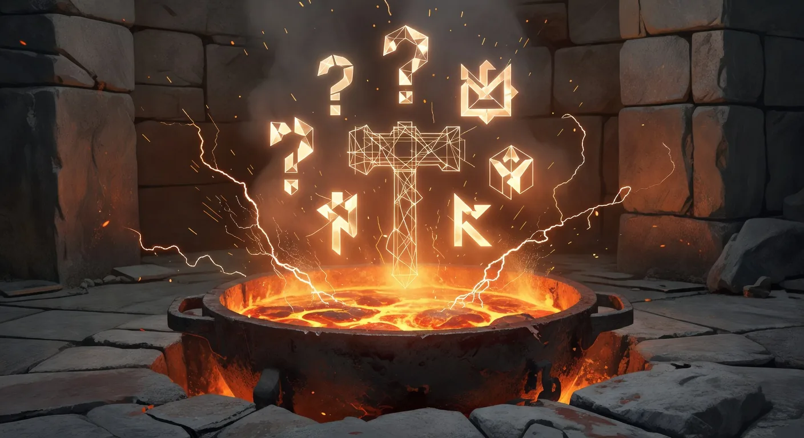
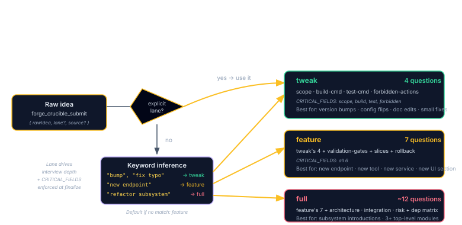
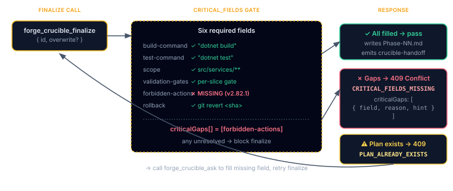

Crucible — The Idea Smelter
The Crucible is the intake interview for Plan Forge. You bring a rough idea ("add user profile editing") and the smelter walks you through 4–12 questions, then writes out a complete Phase plan that's ready for the Forge to execute.
How It Works
The Crucible has three sizes (called lanes) that scale the interview to the size of the change:
- tweak, 4 questions. For version bumps, config tweaks, doc edits, small fixes.
- feature, 7 questions. The default. For new endpoints, new tools, new services with a handful of slices.
- full, about 12 questions. For architectural changes that touch three or more top-level modules.
You can pick a lane explicitly, or let Crucible infer one from your raw idea (it looks for keywords like "bump" or "refactor subsystem"). When the interview ends, Crucible writes docs/plans/Phase-NN.md and hands it off to the Plan Hardener (Step 2 of the pipeline).
Why Smelt Before Hardening?
The Plan Hardener (Step 2) assumes you already know what you want to build. Crucible exists because most of the time, you don't, not precisely enough for a hardened plan. The smelter enforces three things:
- A stable phase name, an atomic claim prevents two parallel agents from both creating "Phase 17".
- A minimum set of answered questions, lane-scaled (4 / 7 / ~12) so trivial tweaks don't get full-feature ceremony.
- A provenance stamp, every plan carries
crucibleId,lane, andsourcein its frontmatter so downstream gates can audit how it got here.
docs/plans/Phase-*.md must carry a crucibleId. Plans get one of three ways: by finishing a smelt, by using --manual-import for hand-authored or Spec Kit imports, or by the grandfather migration that runs once when you first upgrade. Plans without a crucibleId are rejected at run time.
The Three Lanes

tweak (4 questions, scope+build+test+forbidden), 'new endpoint'/'new service' -> feature (7 questions, all 6 CRITICAL_FIELDS), 'refactor subsystem'/'architectural shift' -> full (~12 questions, feature plus architecture/integration/risk/dep matrix). Default fallback if no keyword match: feature lane. Lane drives interview depth and which CRITICAL_FIELDS are enforced at finalize." class="diagram-img diagram-img-md my-4" />Crucible scales its interview to the size of the change. Pick (or let the server infer) one of:
Version bumps, config flag flips, doc edits, small bug fixes. Inferred when the raw idea mentions "bump", "fix typo", "update dep". Includes a forbidden-actions question so even tiny changes declare what they won't touch.
Default lane. New endpoint, new tool, new UI section, new service with a handful of slices.
Architectural shifts, subsystem introductions, anything that touches three or more top-level modules.
The Interview Loop
Crucible streams one question at a time. You answer, it writes the answer to the smelt's JSONL record, then it computes the next question. Six MCP tools drive the loop:
forge_crucible_submit { rawIdea, lane? source? } → { id, firstQuestion }
forge_crucible_ask { id, answer, questionId? } → { nextQuestion | done: true }
forge_crucible_preview { id } → { draft, criticalGaps[] }
forge_crucible_finalize{ id, overwrite? } → { phaseName, planPath, hardenerHandoff }
forge_crucible_list { status? } → [ smelts … ]
forge_crucible_abandon { id, reason? } → { ok }Optional questionId on ask: pass the question id you're answering. If it doesn't match the server's pending question id, the call returns 409 with ASK_QUESTION_MISMATCH and an { expected, got } payload. Multi-turn LLM clients that fall out of sync get a loud failure instead of silent answer corruption.
Build/test command inference: when the build-command or test-command questions come up, the interview pre-fills suggestions via inferRepoCommands, it inspects package.json scripts, *.csproj, pyproject.toml, Cargo.toml, go.mod, etc. You usually just confirm.
Finalize writes docs/plans/<phaseName>.md with the answer-derived draft and emits crucible-handoff-to-hardener on the hub so the dashboard (and downstream agents) can pick up the plan for Step 2.
CRITICAL_FIELDS Gate v2.82.1+
Crucible refuses to finalize a smelt with placeholder TBDs. The gate checks six fields; any unresolved field is a hard block:

| Field | Lane(s) | What it locks down |
|---|---|---|
build-command | all | Exact build command the orchestrator runs as a per-slice gate. Inferred from repo if possible. |
test-command | all | Exact test command. Inferred from repo if possible. |
scope | all | Plan-level + per-slice Files in scope |
validation-gates | feature, full | At least one executable gate per slice |
forbidden-actions | tweak (4), feature (7) | Concrete file patterns or named actions that are out-of-bounds |
rollback | feature, full | How to undo the change cleanly |
Finalize behavior with gaps
If any field is missing, forge_crucible_finalize returns:
- MCP tool:
{ ok: false, code: "CRITICAL_FIELDS_MISSING", criticalGaps: [{ field, reason, hint }, …] } - REST:
409 Conflictwith{ criticalGaps[], unresolvedFields[], hint: "call /api/crucible/preview" }
The preview tool returns the same criticalGaps[] structure without trying to write a plan, so LLM agents can self-correct.
Plan-already-exists protection
If docs/plans/<phaseName>.md already exists and is non-empty, finalize refuses to overwrite a hand-authored plan:
- A side-by-side
<phaseName>.crucible-draft.mdis written so the smelt's draft is preserved - MCP tool:
{ ok: false, code: "PLAN_ALREADY_EXISTS", phaseName, planPath, draftPath } - REST:
409 Conflictwith the same payload - Pass
overwrite: trueon either surface to bypass, the previous plan moves to<phaseName>.replaced-<timestamp>.md
Recursion Guardrails
A smelt can spawn a child smelt, useful when answering a question reveals a sub-feature that itself needs its own phase. The server enforces a maximum recursion depth (default 1, configurable up to 3) so a runaway agent cannot chain smelts indefinitely.
Child smelts inherit parentSmeltId and appear linked in the dashboard. The parent can reference the child's crucibleId in its frontmatter so the audit chain stays intact.
Enforcement Gate
The crucible-enforce gate refuses to accept any plan under docs/plans/Phase-*.md without a crucibleId. There are exactly three legitimate ways to satisfy it:
- Finalize a smelt, the normal path. Frontmatter is written automatically.
- Grandfather migration, on first run after upgrade, existing phase files get a synthetic
crucibleId: grandfathered-<uuid>and a row in.forge/crucible/manual-imports.jsonl. - Manual import,
pforge run-plan --manual-import path/to/plan.mdstamps a syntheticimported-<source>-<uuid>id and logs the bypass. Reserved for Spec Kit imports, offline drafts, and genuine emergencies.
Spec Kit Coexistence
Spec Kit users import external specs regularly. Crucible treats those imports as a first-class path:
pforge run-plan --manual-import docs/plans/imported/Phase-from-speckit.md \
--source speckit \
--reason "Imported from Spec Kit session 2026-04-15"The gate writes frontmatter with source: speckit and appends an audit row. The Spec Kit importer does not require a full interview, it trusts that the external spec already carried equivalent structure.
Dashboard Integration
Two tabs expose Crucible's state:
- 🔥 Crucible tab, live list of in-progress smelts, the active interview prompt, and a draft preview that updates as answers are recorded. A "Hardener ready" notice appears after finalize.
- 🛡 Governance tab, read-only view of
docs/plans/PROJECT-PRINCIPLES.md,.github/instructions/project-profile.instructions.md, and.github/instructions/project-principles.instructions.md, plus the full manual-import audit log. Edits happen in your editor; this tab is intentionally non-editable.
Config Tab Fields
The Config tab's Crucible section persists to .forge/crucible/config.json. All writes go through a sanitizer that drops unknown fields and snaps numbers to safe bounds, so no UI bug can corrupt the file.
| Field | Range | Default | What it does |
|---|---|---|---|
defaultLane | tweak / feature / full | feature | Lane used when forge_crucible_submit is called without one. |
recursionDepth | 0–3 | 1 | Max child-smelt depth before the server refuses to spawn another. |
autoApproveAgent | boolean | false | When true, smelts with source: agent auto-finalize after the interview completes. Use with care. |
sourceWeights | sum 100 | 34/33/33 | Weighting for how Memory / Principles / Plans contribute to default answers in the interview. Server normalizes any sum to 100. |
staleDefaultsHours | 1–168 | 24 | If your Principles or profile file is newer than the smelt by this many hours, the interview flags a STALE_PRINCIPLES / STALE_PROFILE warning so you re-read before finalizing. |
Troubleshooting
- "Plan rejected: missing crucibleId"
- Expected. Either finalize a smelt, re-run setup to trigger grandfather migration, or use
--manual-importwith a--reason. - CRITICAL_FIELDS_MISSING on finalize v2.82.1
- Call
forge_crucible_previewto seecriticalGaps[]with{ field, reason, hint }for each missing answer. The interview will queue a question for each gap when you callasknext. - PLAN_ALREADY_EXISTS on finalize v2.82.1
- Read the existing plan at
planPathand the smelt's draft atdraftPathbefore deciding. If you genuinely want to replace the existing plan, call finalize again withoverwrite: true; the original moves to<phaseName>.replaced-<timestamp>.md. - ASK_QUESTION_MISMATCH v2.82.1
- Your client passed a
questionIdthat doesn't match the server's pending question. Re-fetch state viaforge_crucible_preview(returns the active question) and retry. Common when two LLM clients drive the same smelt out of order. - "STALE_PRINCIPLES" warning on every smelt
- Your Principles file changed after the smelt started. Read it, then resume or abandon. If you consistently hit this, raise
staleDefaultsHoursin Config. - Recursion blocked at depth 1
- By design. If you genuinely need deeper chains, bump
recursionDepthin Config. Three is the hard ceiling, beyond that, extract a separate Phase. - Governance tab shows empty file list
- You haven't created
docs/plans/PROJECT-PRINCIPLES.mdyet. Run/project-principlesin Copilot chat, or create the file manually.
What's new in v3.x
Crucible's downstream surfaces have grown since the original chapter. None of these change the core interview → plan → hardener flow above; they extend it with feedback loops the rest of the system uses:
- Classifier feedback loop. A finalized smelt that later produces a tempering finding can be routed via forge_classifier_issue when the finding turns out to be classifier noise rather than a product bug, closing the audit loop.
- Drain round-loop. The
forge_tempering_drainround-loop (Ch 21 Audit Loop) re-probes a plan's gates until convergence, surfacing residual CrucibleSTALE_PRINCIPLESwarnings as actionable findings rather than transient noise. - Knowledge graph enrollment. Every Crucible smelt lands as a Phase / Slice node in the knowledge graph, so
forge_patterns_list's detectors can spot Crucible-stage anti-patterns alongside execution-stage ones.
Further Reading
- Chapter 2 — How It Works (Crucible's place in the 6-stage pipeline)
- Chapter 4 — Writing Plans That Work (what a hardened plan looks like after smelt → harden)
- Chapter 11 — MCP Server & Tools (the
forge_crucible_*tool surface)